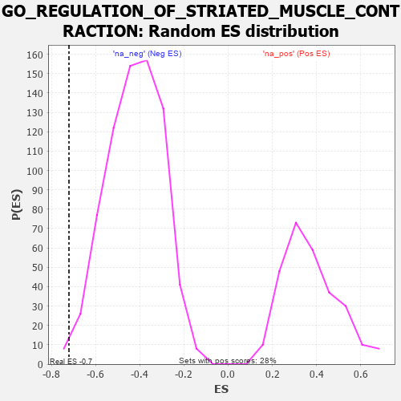

| | | Dataset | 7d |
| Phenotype | NoPhenotypeAvailable |
| Upregulated in class | na_neg |
| GeneSet | GO_REGULATION_OF_STRIATED_MUSCLE_CONTRACTION |
| Enrichment Score (ES) | -0.7206737 |
| Normalized Enrichment Score (NES) | -1.7060714 |
| Nominal p-value | 0.008275862 |
| FDR q-value | 0.03622578 |
| FWER p-Value | 0.923 |
Table: GSEA Results Summary
 Fig 1: Enrichment plot: GO_REGULATION_OF_STRIATED_MUSCLE_CONTRACTION
Fig 1: Enrichment plot: GO_REGULATION_OF_STRIATED_MUSCLE_CONTRACTION
Profile of the Running ES Score & Positions of GeneSet Members on the Rank Ordered List
| PROBE | GENE SYMBOL | GENE_TITLE | RANK IN GENE LIST | RANK METRIC SCORE | RUNNING ES | CORE ENRICHMENT | | 1 | GATA4 | | | 1837 | 0.330 | -0.2074 | No |
| 2 | SMAD7 | | | 3369 | 0.093 | -0.3931 | No |
| 3 | PDE4B | | | 4089 | -0.022 | -0.4819 | No |
| 4 | P2RX4 | | | 4813 | -0.161 | -0.5613 | No |
| 5 | DLG1 | | | 4860 | -0.169 | -0.5551 | No |
| 6 | ACTN3 | | | 5486 | -0.315 | -0.6113 | No |
| 7 | KCNQ1 | | | 5918 | -0.441 | -0.6341 | No |
| 8 | TRPM4 | | | 6390 | -0.612 | -0.6498 | No |
| 9 | SCN4A | | | 6955 | -0.910 | -0.6560 | Yes |
| 10 | HCN4 | | | 7260 | -1.134 | -0.6135 | Yes |
| 11 | ANK2 | | | 7298 | -1.170 | -0.5350 | Yes |
| 12 | CALM1 | | | 7567 | -1.499 | -0.4621 | Yes |
| 13 | PDE4D | | | 7764 | -1.944 | -0.3485 | Yes |
| 14 | CALM3 | | | 7869 | -2.525 | -0.1821 | Yes |
| 15 | CAV3 | | | 7896 | -2.739 | 0.0094 | Yes |
Table: GSEA details [plain text format]

Fig 2: GO_REGULATION_OF_STRIATED_MUSCLE_CONTRACTION: Random ES distribution
Gene set null distribution of ES for GO_REGULATION_OF_STRIATED_MUSCLE_CONTRACTION